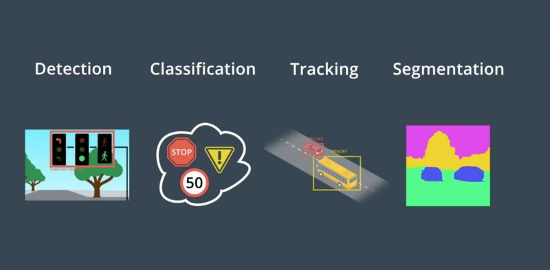
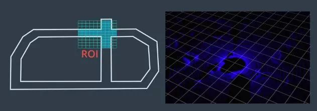
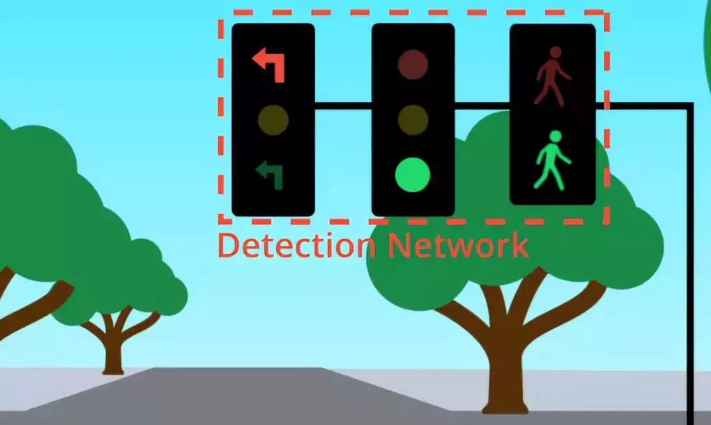

快速回忆
- 感知的核心任务有哪些？如何解决？
- 多感知器的数据集如何融合？简述原理？
感知
感知实质上是计算机视觉（CV）的概念。无人车的感知包括四个核心任务：

- 检测：找出物体在环境中的位置；
- 分类：明确对象是什么；
- 跟踪：随时间的推移观察移动物体；
- 语义分割：将图像中的每个像素与语义类别进行匹配。
检测和分类
- 场景
感知任务中，首先是障碍物检测和分类，在驾驶过程中会遇到许多障碍物，静态障碍物包括墙壁、树木、杆子、建筑物；动态障碍物包括行人、自行车、汽车。计算机首先需要知道障碍物的位置，然后进行分类。
另一个示例为交通信号灯检测分类，首先将使用计算机视觉对图像中的交通信号灯进行定位，然后根据灯光显示颜色对交通信号灯进行分类。
- 解决方案
先使用检测CNN来查找图像中的对象的位置，在对图像中的对象进行定位后，将图像发送给另一个CNN进行分类。
也可以使用单一CNN体系结构对对象进行检测和分类，一种通常的做法为在单个网络体系结构的末端附加几个不同的“头”，一个头可能执行检测，另一个则可能执行分类。经典体系结构为 R-CNN、Fast R-CNN、Faster R-CNN、YOLO、SSD等。
跟踪
追踪在检测失败时是至关重要的……追踪可以解决遮挡问题；另外，追踪可以保留身份。
追踪的第一步为确认身份，通过查找特征相似度最高的对象，将在之前的帧中检测到的所有对象与在当前的帧中检测到的对象进行匹配。
在确定身份后，可以使用对象的位置并结合预测算法以估计在下一个时间步的速度和位置，该预测可帮助识别下一帧中的相应对象。
分割
语义分割涉及对图像的每个像素进行分类，用于尽可能详细地了解环境并确定车辆可驾驶区域。
语义分割依赖于一种特殊类型的CNN，被称为全卷积网络（FCN）。FCN用卷积层来替代传统CNN体系结构末端的平坦层，现在网络中的每一层都是卷积层，因此名称为“全卷积网络”。FCN提供了可在原始输入图像之上叠加的逐像素输出。在CNN中，经过多次卷积的输出比原始输入图像小，对此，可以对中间输出进行上采样处理，直到最终输出的大小与原始输出图像的大小相匹配。
网络的前半部分通常被称为编码器，因为这部分网络对输入图像的特征进行了提取和编码。网络的后半部分通常被称为解码器，因为它对这些特征进行了解码并将其应用于输出。
除图像外，激光雷达数据的点云图和其他类型的数据也可以进行语义分割。
Apollo感知
Apollo 在高精度地图上使用感兴趣区域ROI来重点关注相关对象。Apollo将ROI过滤器应用于点云和图像数据，以缩小搜索范围并加快感知。
然后通过检测网络馈送已过滤的点云，输出用于构建围绕对象的三维边界框。
最后使用被称为检测跟踪关联的算法来跨时间步识别单个对象，该算法先保留在每个时间步要跟踪的对象列表，然后在下一个时间步中找到每个对象的最佳匹配。

对于交通信号灯的分类，Apollo先使用高精度地图来确定前方是否存在交通信号灯。如果前方有交通信号灯，则高精度地图会返回灯的位置。后续根据位置，摄像头搜索范围，使用检测网络对图像中的灯进行定位，然后从较大的图像中提取交通信号灯。将裁剪的交通灯图像提供给分类网络以确定灯颜色，如果有许多灯则系统需要选择哪些灯与其车道相关。

Apollo使用 YOLO 网络来检测车道线、动态物体(其中包括车辆、卡车、骑自行车的人、行人)。
感知融合策略
Apollo使用激光雷达和雷达来检测障碍物，用于融合输出的主要算法为卡尔曼滤波。卡尔曼滤波有两个步骤：第一步为预测状态，第二步是更新测量结果。
有两种测量结果更新步骤：同步和异步。同步融合同时更新来自不同传感器的测量结果，而异步融合则逐个更新所收到的传感器测量结果。传感器融合可提高感知性能，因为各传感器相辅相成，融合也可以减少跟踪误差。